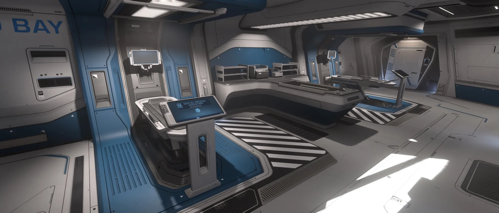
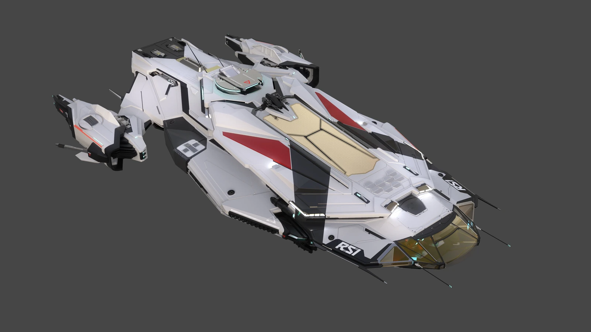
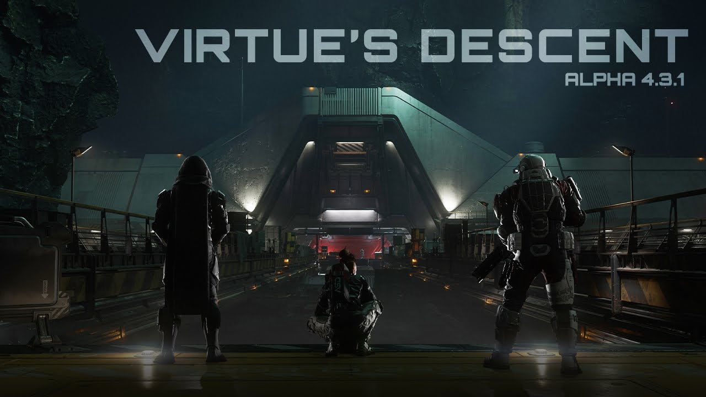

Heilung, neu gedachtMedical Overhaul
4.3.1 baut das Medizin-System um: Wunden, Heilung, Rettung und Wiederbelebung funktionieren neu — angefuehrt vom RSI Apollo und dem MedGel-System.
Alpha 4.3.1 ueberarbeitet das Medizin-System grundlegend — wie Wunden entstehen und heilen und wie Spieler gerettet und wiederbelebt werden. Aus einem Randthema wird eine eigene Schleife.
Die neue Versorgungs-Schleife
Verwundung
Wunden entstehen jetzt nach neuen Regeln — der erste Baustein des ueberarbeiteten Medizin-Systems bestimmt, wie ein Spieler ueberhaupt zu Schaden kommt.
MedGel-Versorgung
Medizin-Betten ziehen MedGel-Ladungen fuer ihre Funktionen. MedGel ist ein Verbrauchsmaterial — ist es leer, steht das Bett still.
Bett-Stufen T1-T3
Betten reichen von T1 bis T3 mit angepassten Respawn-Distanzen — T1 etwa das Krankenhaus in New Babbage mit Premium-Versorgung, T3 etwa die Cutlass Red.
Wiederbelebung
Rettung und Wiederbelebung funktionieren neu — der letzte Schritt der Schleife entscheidet, wo und wie ein Spieler zurueck ins Verse kommt.
RSI Apollo — Medivac & Triage
Mit dem Medizin-Umbau rueckt der RSI Apollo ins Zentrum: ein dediziertes Sanitaetsschiff in zwei Ausrichtungen — Medivac fuer die Bergung, Triage fuer die Versorgung.
Seine Medizin-Betten erhalten Regenerations-Faehigkeiten und machen den Apollo zum fliegenden Stuetzpunkt fuer Teams, die tief im Verse operieren — dort, wo das naechste Krankenhaus weit entfernt ist.
✚ Medivac
- Ausgelegt auf die Bergung Verwundeter aus dem Feld.
- Holt gefallene Spieler dorthin, wo sie versorgt werden.
- Die schnelle Antwort, wenn jemand draussen liegt.
- Bringt die Rettung zum Patienten statt umgekehrt.
✚ Triage
- Ausgelegt auf die Versorgung an Bord.
- Medizin-Betten mit Regenerations-Faehigkeiten.
- Fliegender Stuetzpunkt fuer laufende Operationen.
- Haelt ein Team im Einsatz, fernab vom Krankenhaus.
Medizin-Betten haben Stufen von T1 bis T3 mit angepassten Respawn-Distanzen. T1 steht etwa fuer das Krankenhaus in New Babbage mit Premium-Versorgung, T3 etwa fuer die Cutlass Red — je hoeher die Stufe, desto naeher die Rueckkehr.
Wer dich rettet, entscheidet, wo du wieder aufwachst.Medical Overhaul · Alpha 4.3.1
Die Onyx-Story setzt sich mit Site B fort: Dr. Jorrits Labor, in dem Spieler biologische Proben bergen — eine weitere Schicht zum Erkunden, eng verzahnt mit dem medizinischen Thema des Patches.
Media

⤢
⤢
⤢Quelle: offizieller Star-Citizen-Kanal & Star Citizen Wiki (© Cloud Imperium Games). Bilder zu Veranschaulichung, Fan-Content-Nutzung.